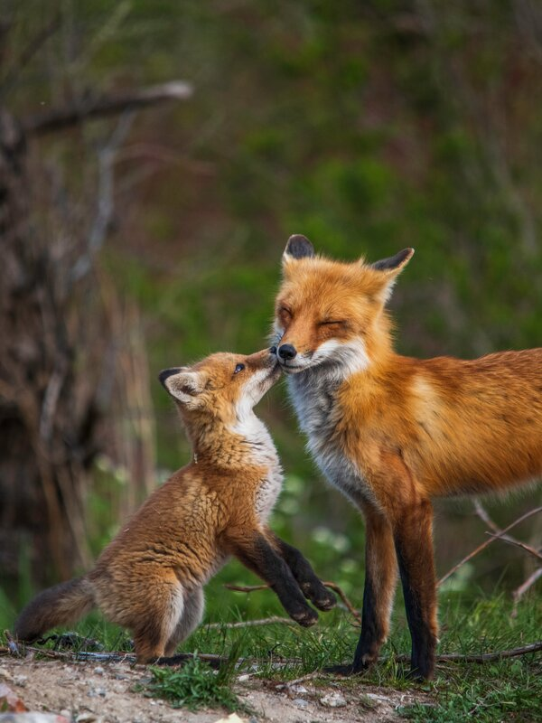
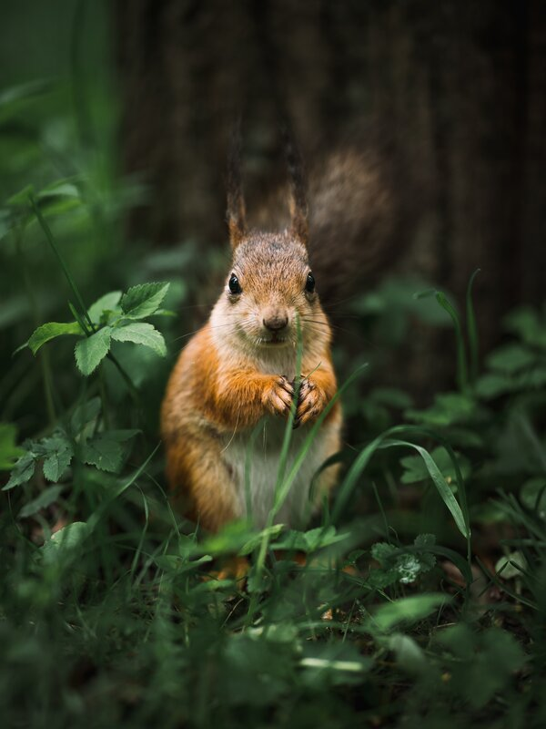
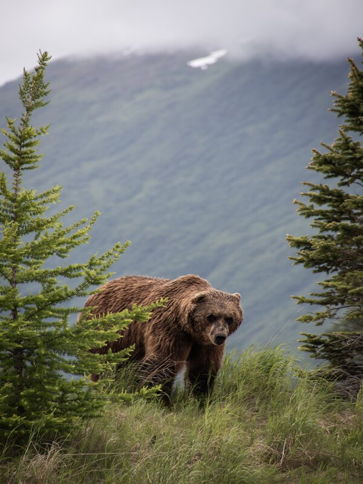
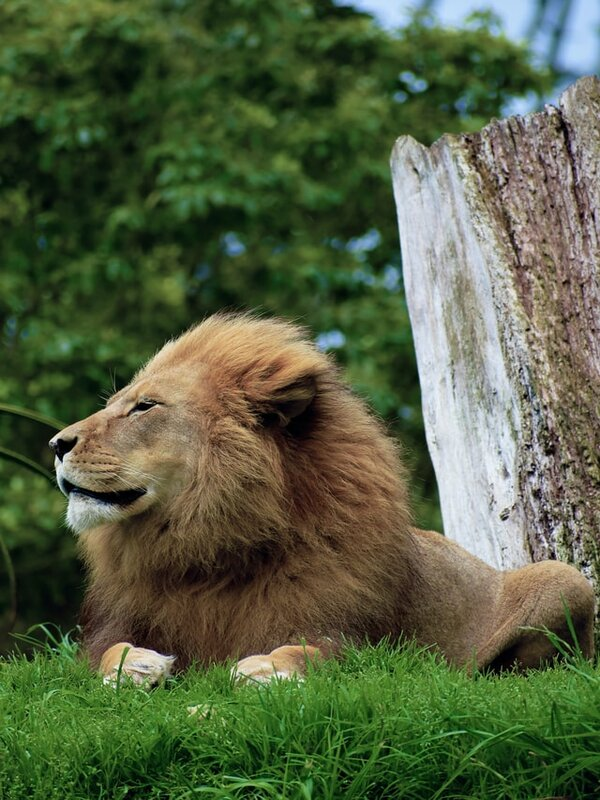

Animais Fantásticos
- 
- 
- 


- 
Raposa
As raposas são animais mamíferos e onívoros pertencentes à família Canidae. São vulpídeos de porte médio, caracterizados por um focinho comprido e uma cauda longa e peluda.
Também apresentam como particularidade suas pupilas ovais, semelhantes às pupilas verticais dos felídeos.
De cerca de 40 espécies reconhecidas como raposas, somente 12 pertencem ao gênero Vulpes das "raposas verdadeiras", do qual a raposa vermelha é a mais comum.
Também apresentam como particularidade suas pupilas ovais, semelhantes às pupilas verticais dos felídeos.
Esquilo
Os esquilos pertencem a uma grande família de mamíferos roedores, de pequeno e médio porte, conhecida como Sciuridae.
As sementes são as principais fontes de alimentação, mas também consomem insetos e frutas. Quando coletam alimento, enterram algumas sementes que encontram, sendo que algumas chegam a germinar, como pinhões e coquinhos, acabando por plantar árvores como araucária e jerivá.
Durante a gestação, os pais preparam o ninho para receber os filhotes. Constroem ninhos com folhas e galhos, em ramos muito altos, em árvores como a cajarana, para abrigarem as suas crias da chuva e do vento.
Urso
Os Ursos constituem uma família de mamíferos plantígrados, geralmente de grande porte, contendo os ursos e os pandas.
Algumas características comuns dos ursos são pelagem espessa, rabo curto, o olfato desenvolvido e as garras não retráteis. Os ursídeos são geralmente animais omnívoros, mas se alimentam principalmente de carne.
Os ursos existem em todos os continentes, em exceção na África, embora algumas fontes afirmem terem avistado o Urso nandi, mas sem comprovarem a sua existência.
As espécies mais antigas e primitivas desta família estão reunidas no gênero Ballusia, do Mioceno Inferior, que ainda retêm características similares aos Hemicyonidae. Do Ballusia descende o gênero Ursavus, fonte dos ursíneos, e talvez o Agriarctos, ancestral dos agrioteríneos.
Lobo
O lobo é uma espécie de mamífero canídeo do gênero Canis. É um sobrevivente da Era do Gelo, originário do Pleistoceno Superior, cerca de 300 mil anos atrás. É o maior membro remanescente selvagem da família canidae.
O peso e tamanho dos lobos variam muito em todo o mundo, tendendo a aumentar proporcionalmente com a latitude, como previsto pela teoria de Christian Bergmann. Em geral, a altura, medida a partir dos ombros, varia de 60 a 95 centímetros.
Os lobos são capazes de percorrer longas distâncias com uma velocidade média de 10 quilômetros por hora e são conhecidos por atingir velocidades próximas a 65 quilômetros por hora durante uma perseguição.
Os lobos possuem uma audição bastante apurada, a ponto de serem capazes de ouvir a queda de folhas das árvores durante o outono. Sua visão noturna é a mais aguçada da família dos canídeos.
Mandril
O mandril é um primata da família dos Cercopithecidae (Macacos do velho mundo), parentes próximos dos babuínos e ainda mais próximos do dril. Tanto o mandril quanto o dril eram antes classificados como babuínos do gênero Papio, mas pesquisas recentes determinaram que eles deveriam constituir um gênero à parte, Mandrillus.
O mandril é reconhecido pela sua pelagem verde-oliva e a face e nádegas multicoloridas nos machos, coloração que se torna mais intensa à medida que chega a maturidade sexual, tornando-se ainda mais pronunciada nos momentos de excitação. Nas fêmeas a coloração é mais neutra.
Mandris são seres sociais e podem ser achados em grupos de até 800 indivíduos, geralmente fêmeas e jovens liderados por um macho dominante. Muitos machos adultos são solitários.
O mandril é um animal onívoro. Geralmente, consome plantas, das quais ele come mais de uma centena de espécies. Este animal se alimenta de frutas, folhas, lianas, cascas, caules e fibras. Consome artrópodes, ovos e até animais vertebrados, como aves, tartarugas, sapos, porcos espinhos, ratos e musaranhos.
Leão
O Leão é uma espécie de mamífero carnívoro do gênero Panthera e da família Felidae.
A pelagem é unicolor de coloração castanha, e os machos apresentam uma juba característica. Uma das características mais marcantes da espécie é a presença de um tufo de pelos pretos na cauda, que também possui uma espora. Habita preferencialmente as savanas e pastagens abertas, mas pode ser encontrado em regiões mais arbustivas.
A espécie está classificada como "vulnerável" pela União Internacional para a Conservação da Natureza e dos Recursos Naturais (IUCN), e sofreu um declínio populacional de 30-50% nas últimas duas décadas no território africano. Na Ásia, o leão está confinado a uma única área protegida e sua população é estável, mas está classificado como "em perigo", já que a população não passa de 350 animais.